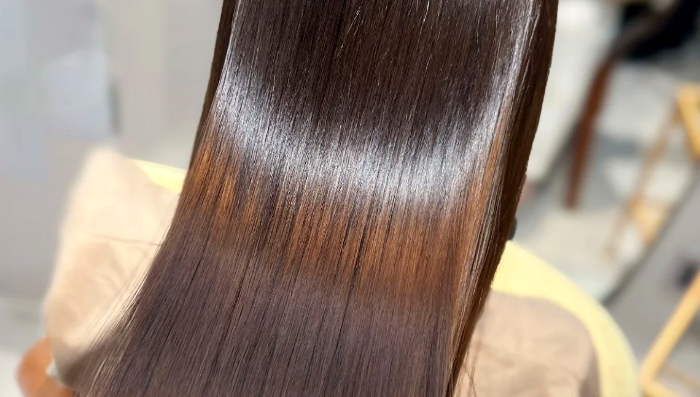
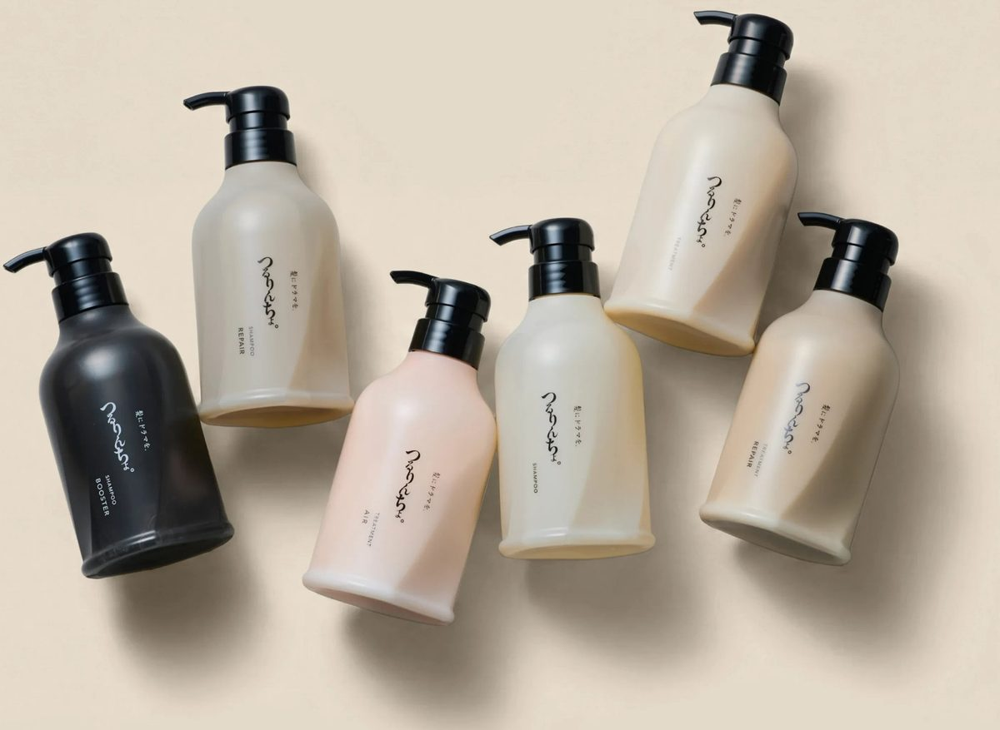
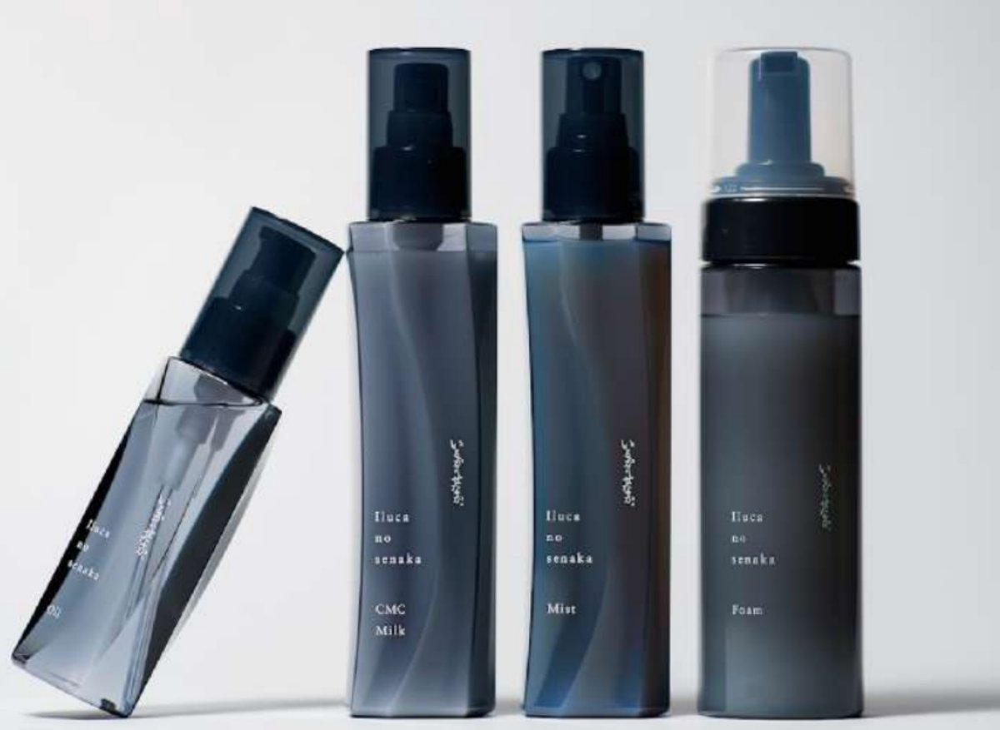

洗う
予洗いと、3分パック
- シャンプー前によくすすぐ(余分な汚れを落として泡立ちアップ)
- お湯は38〜39℃(頭皮の皮脂を守り乾燥を防止)
- 専用シャンプーで3分間、泡パック
つるりんちょ。シャンプーREGULAR / REPAIR
HAIR DIAGNOSIS RESULT ― 診断結果
その艶は、これからの毎日でつくられる。
診断、いかがでしたか。今日感じた仕上がりの心地よさが、明日もその先も続くように。ここからは、あなたの毎日に取り入れたい、つるりんちょ。のホームケアをご案内します。

そんな毎日をつくる、6つの小さな習慣から。
YOUR ROUTINE
特別なことは、何もいりません。今日から、いつものお風呂とスタイリングの中に、この7つを少しだけ足してみてください。
洗う汚れを落とし、地肌を整える
シャンプー前は、ぬるま湯でしっかりと予洗いを。泡立ちも仕上がりも変わります。
シャンプーは泡立てて、洗い流さずそのまま3分、パックするように置いて。
整える水分を残したまま、内側からツヤを
トリートメントは、水を切らずに。時間を置かずサッと流すだけで、ツヤ感が変わります。
乾かす自然乾燥はいちばんのNG
乾かす前に、洗い流さないオイルやミルクをひとしずく。熱ダメージを防いでくれます。
お風呂上がりはすぐに、「乾いたかな?」から根元までもう少し丁寧にドライヤーを。
最後は冷風でツヤを整えて。キューティクルが整い、指通りが変わります。
スタイリングアイロン前の、ひと手間で守る
アイロンの前に、専用オイルを。コテやアイロンは140度以下がおすすめです。
想像してみてください。
指通りのよい髪で鏡の前に立つ
明日のあなたを。
昨日より少しまとまりやすくなった髪に、
きっと気づくはずです。
WHY IT WORKS
【髪にドラマを。】の髪質改善は、「酸」と「脂質」に着目。表面を整えるだけでなく、髪の骨格そのものから見直していきます。
髪の内側に、必要な栄養素が満ちている状態
高温が加わり、髪の中の水分が蒸発していく
水分が飛び、アミノ酸同士が結びついていく
髪の骨格そのものが、内側から強くなる
髪の骨格から、改善する。
HOME CARE ITEMS
洗う・整える・乾かす。それぞれの工程に、専用のアイテムを。サロンだけの特別価格でご用意しています。


洗う
つるりんちょ。シャンプーREGULAR / REPAIR
リセットする
つるりんちょ。ブースターリセットシャンプー
整える
つるりんちょ。トリートメントAIR / REGULAR / REPAIR
乾かす
いるかのせなか。フォーム / ミスト / ミルク / オイル
スタイリング
いるかのせなか。オイル